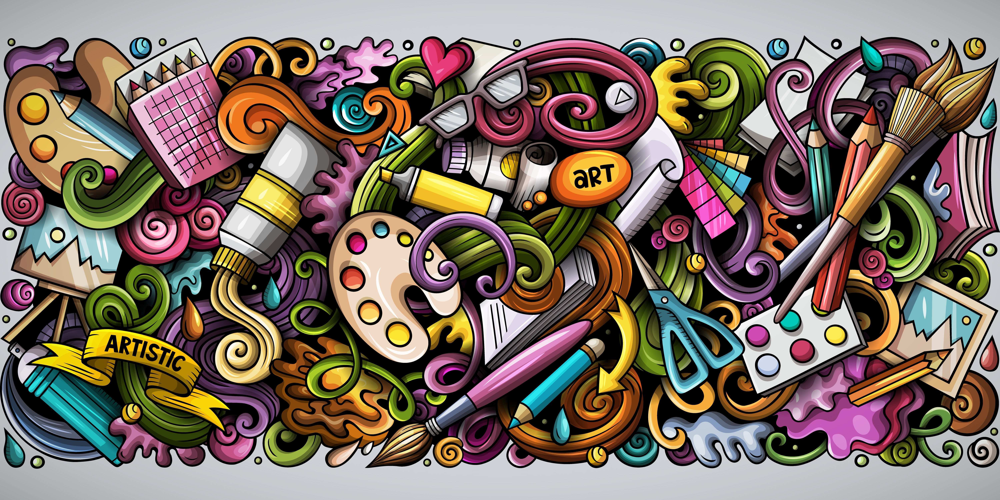

El dibujo es el arte de representar gráficamente objetos sobre una superficie plana; es base de toda creación plástica y es un medio convencional para expresar la forma de un objeto mediante líneas o trazos.
Los tipos de dibujo son artístico, técnico, geométrico, mecánico, arquitectónico, animado y a mano alzada, entre otros. El dibujo representa en sí, un medio de expresión, por medio del cual las personas plasman una idea, en un plano, la idea es expresar lo que la persona tiene en el pensamiento y proyectarlo por medio de formas.
